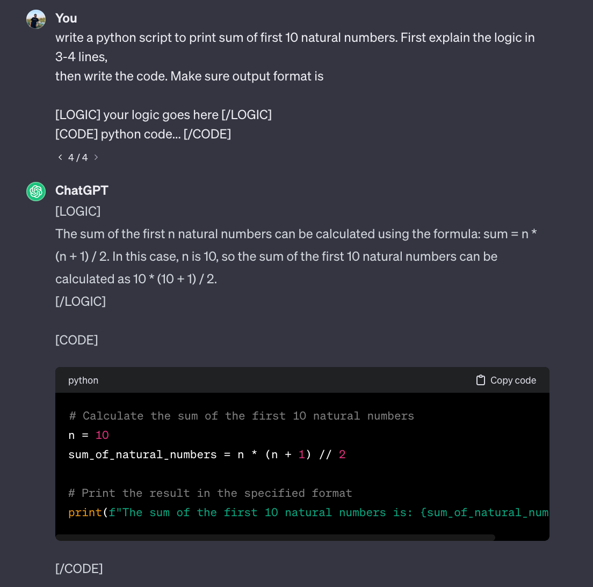

This blog post explores the implementation of large language models (LLMs) as operating systems, inspired by Andrej Karpathy’s vision of AI resembling an OS, akin to Jarvis from Iron Man. The focus is on practical considerations, proposing an application-level integration for LLMs within a terminal session. A novel approach involves injecting state machines into the decoding process, enabling real-time code execution and interaction. Additionally, this post proposes Reinforcement Learning by System Feedback (RLSF),” a reinforcement learning technique applied to code generation tasks. This method leverages a reward model to evaluate code correctness through Python subprocess execution, enhancing LLM performance. The findings contribute insights into the dynamic control of LLMs and their potential applications beyond coding tasks.

Image source: [1hr Talk] Intro to Large Language Models by Andrej Karpathy
Preliminaries:
State Machines: A state machine is a mathematical abstraction used to design algorithms. A state machine reads a set of inputs and changes to a different state based on those inputs. A state is a description of the status of a system waiting to execute a transition. A transition is a set of actions to execute when a condition is fulfilled or an event is received. In a state diagram, circles represent each possible state and arrows represent transitions between states.
Constrained Decoding: Constrained decoding is a technique used in natural language processing and sequence generation tasks, including those involving large language models (LLMs). In constrained decoding, the generation of sequences is guided or restricted by certain constraints or conditions. This approach is particularly useful when you want to control or influence the output of a language model to meet specific requirements or criteria.
A major challenge in the implementation of LLM OS is establishing a Link between the Operating System and LLM, that ensures training following the principle of Responsible AI.
Where should LLM sit? Concerns, Possibilities, and Limitations
Imagine a futuristic Jarvis-like AI. It’ll be able to search through the internet, access local files, videos, and images on the disk, and execute programs. Where should it sit? At the kernel level? At Python Level?
At Kernel Level: Consider integrating our advanced language model with the Linux kernel. This would provide the AI with comprehensive access to the operating system’s core functionalities. However, it’s important to recognize that large language models (LLMs) are designed for human-like interaction, not intricate coding tasks. While embedding the model at the kernel level offers the advantage of understanding and controlling detailed system operations, it raises valid security concerns. Responsible development is crucial to ensure that the AI’s evolving decision-making capabilities don’t inadvertently compromise system integrity.
At Application Level: Alternatively, we can position the LLM at the application level, operating seamlessly within a terminal session. Leveraging the abstractions of a programming language, such as Python, provides optimal control over the AI. This approach facilitates easy updates to the LLM OS and allows for extensive customization.
Towards Implementation: Injecting a State Machine in Decoder
Following is the illustration of how the generation process works in decoder-like models source.

Image source: The Illustrated GPT-2 by Jay Alammar
The seamless interaction of a Large Language Model (LLM) with an operating system (OS) can be achieved through the strategic injection of a State Machine. By utilizing this approach, the model’s behavior can be dynamically controlled, enhancing its capability to engage with the OS. In particular, the injection of special tokens acts as triggers, facilitating interaction with the Python interpreter through subprocesses.
To illustrate this concept, consider the scenario where the LLM is tasked with generating the sum of the first N natural numbers. Here, I request the model to encapsulate the generated code within designated special tokens, [CODE] and [/CODE], during its response. The State Machine is activated upon the generation of the [CODE] token, initiating the collection of the generated code in a buffer.
Upon the subsequent generation of the [/CODE] token, the State Machine orchestrates a temporary pause in the generation process. This interlude allows for the invocation of a Python subprocess to execute the collected code. The output of this execution is then appended to the current cache. Resuming the generation process, this technique enables the model to dynamically learn program execution behavior in real time.
In the following sections of this blog, we delve deeper into how this innovative technique empowers the model to adapt and refine its program execution understanding on the fly.

Following is an illustration of a state machine to do various operations like db queries, accessing file systems, and even internet searches through Python subprocesses.

The Python programming language boasts a robust ecosystem that opens up a multitude of possibilities, especially when harnessed through subprocesses. By utilizing subprocesses, we can seamlessly execute Shell or Programming Language codes, expanding the functionality of our applications. Python’s versatility extends to internet access, where we can leverage powerful libraries like requests and urllib. This capability allows the Large Language Model (LLM) to interact dynamically with online resources. Additionally, the integration of command line packages, such as the one offered by Google, further enhances the LLM’s capacity to fetch information from the web. Python’s sophisticated file-handling utilities provide the LLM with the capability to navigate and manipulate files and multimedia at the user’s request. This functionality extends beyond mere text-based interactions, offering a rich, multimodal experience. The inclusion of multimodal models further augments the LLM’s ability to interpret and respond to a diverse range of user inputs.
Tuning LLMs for OS use case: A RL Problem:
Imagine confronting a challenging programming problem and enlisting the assistance of the Large Language Model (LLM) to generate a solution. Traditionally, the process involves articulating the problem to the LLM, receiving the generated code, manual inspection for correctness, and iterative feedback for bug resolution.
Now, let’s recast this procedure as a Reinforcement Learning (RL) challenge, casting our LLM as an agent navigating a realm of computer processes. In this RL framework, the agent’s objective is to generate code, subject to correctness scrutiny.
To enhance this code generation process, we leverage a fundamental concept in RL — the reward model. This model quantifies the quality of generated code based on execution results. Through training the reward model, the LLM is systematically penalized for generating incorrect code, eliminating the need for manual intervention.
I call this technique Reinforcement Learning by System Feedback (RLSF). This technique can not only be applied to improving LLMs on code generation tasks but to a variety of tasks as shown in the state machine diagram.
Concluding Notes
The reason I published this blog post is because I think the discussion of integrating LLMs with Operating Systems should be Open. It should be developed responsibly in an Open Source Environment. If there is an initiative like this in the future, I would love to collaborate on it! At this stage, I couldn’t get a working prototype of the approaches I discussed due to a lack of computing resources.
Just Imagine an operating system built on HuggingFace transformer’s LLM pipelines. This setup not only accommodates the effortless integration of new models but also ensures the system remains adaptable to the latest advancements in the field. LLMs can add a new layer of accessibility to our Operating System by acting as smart interfaces.
Acknowledgements
Ravindra Majumdar and Sunil Mallya for introducing me to the concept of constrained decoding.